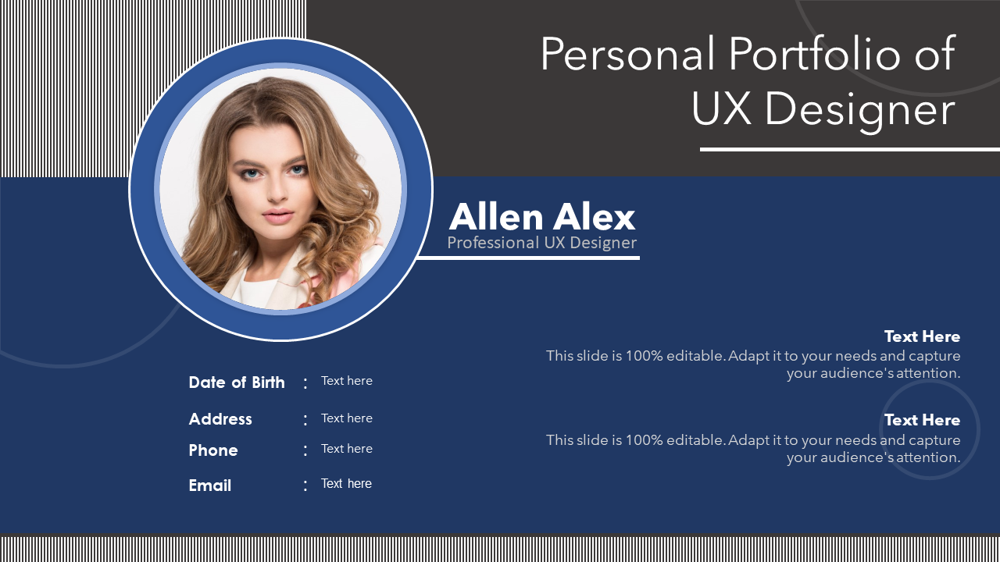
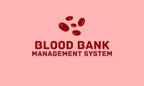
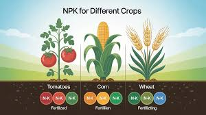

Projects

Personal Portfolio
A stylish personal portfolio website built using HTML and CSS.

BloodBank Management System
A responsive webpage using springboot and react js

Fertilizer Optimizer using NPK
A project made with machine learning techniques to help farmers.

Pet Adoption System
A webpage to adopt the different types of pet by using HTML,CSS and CNN.